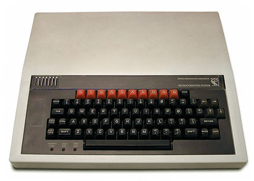
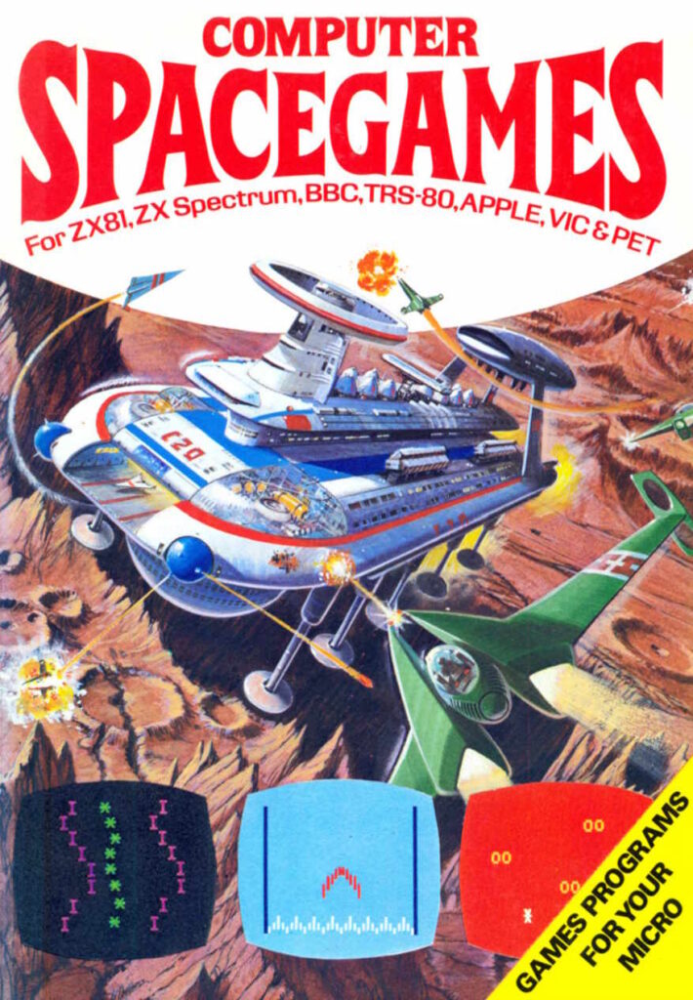

1984-ish
BBC Micro
My dad bought a BBC B, and I learned that computers were not sealed appliances. You could type a listing from a book, make a mistake, fix it, and suddenly a machine did something because you told it to.
About me
I have always liked the bit where computers meet the real world. The BBC Micro started it, mechatronics formalised it, motorsport made it noisy, SaaS made it serious, and AI/robotics has dragged all of it back into one place.

The pattern
I like problems that start slightly ridiculous and then become engineering. A hovercraft at GCSE, a robot CD player at A level, an award-winning robotic chessboard at university, Formula One sensors and telemetry, production systems at scale, and now robot learning. Different tools, same itch.
1984-ish
My dad bought a BBC B, and I learned that computers were not sealed appliances. You could type a listing from a book, make a mistake, fix it, and suddenly a machine did something because you told it to.


Now
These days the parts are PyTorch, MuJoCo, CAN bus, cloud infrastructure, ESP32s, sensors, 3D prints, notebooks, traces and occasionally a soldering iron. It is still basically: make the thing, understand the thing, improve the thing.
Personal operating notes
I like knowing whether a system is genuinely better, not just whether the graph looks nicer.
Trust, challenge, humour and people playing their position on the pitch.
Software is more interesting when it moves hardware, handles real users or has to survive reality.